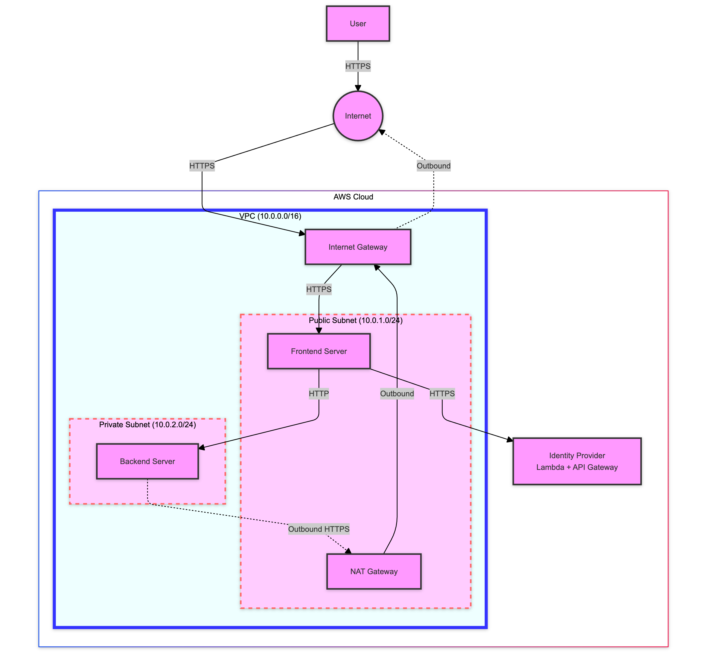

Implementing Continuous Verification in Zero Trust Architecture
Introduction
Welcome to our Zero Trust Architecture lab focusing on continuous verification! In this lab, you will implement a system that demonstrates core Zero Trust principles, with a particular emphasis on continuous verification using short-lived access tokens. This lab will help you understand the practical implementation of the "Never Trust, Always Verify" principle in a cloud environment.

Lab Overview
In this lab, you will:
- Set up a simulated Identity Provider (IdP) using AWS Lambda and API Gateway
- Create a VPC with public and private subnets to simulate network segmentation
- Implement network security using Internet Gateway, NAT Gateway, and security groups
- Deploy a backend server with token-based access control in a private subnet
- Deploy a frontend server in a public subnet that authenticates users, manages tokens, and mediates access to the backend
- Implement and observe continuous verification mechanisms
Key Components
- Identity Provider (IdP): Lambda functions for authentication and token management
- VPC: A Virtual Private Cloud with public and private subnets
- Security Groups: WebServerSG and BackendServerSG to control network access
- Backend Server: An EC2 instance in the private subnet that checks for valid access tokens
- Frontend Server: An EC2 instance in the public subnet that manages user sessions and access tokens
Lab Steps
- Set up the AWS environment and initialize necessary clients
- Create an Identity Provider using Lambda and API Gateway
- Set up a VPC with public and private subnets
- Configure Internet Gateway, NAT Gateway, and route tables
- Create security groups for frontend and backend servers
- Deploy the backend server in the private subnet
- Deploy the frontend server in the public subnet
- Test the Zero Trust-secured system with continuous verification (admin/password123)
Key Learning Points
-
Never Trust, Always Verify: The frontend server authenticates with the IdP for every user action, demonstrating the core Zero Trust principle.
-
Token-based Authentication: When a user logs in to the frontend to access the backend, it contacts the IdP to authenticate the user and obtain a token. This token is then used for subsequent requests.
-
Continuous Verification: The lab implements short-lived tokens that require frequent renewal. You'll be able to observe:
- The token expiration countdown
- Automatic token refresh when "auto refresh" is enabled
-
Session termination when the token expires without refresh
-
Network Segmentation: The use of public and private subnets demonstrates the principle of least privilege access.
-
Simulated Adaptive Authentication: While not fully implemented in this lab, we discuss how abnormal user activity could trigger additional authentication factors (e.g., MFA) in a production environment.
-
Secure Communication: All communication between components uses HTTPS, ensuring data in transit is protected.
-
Logging and Monitoring: The lab includes basic logging of authentication attempts and token refreshes, highlighting the importance of visibility in a Zero Trust model.
Lab Workflow
- Initial Authentication:
- User attempts to access the frontend server
- Frontend redirects to the IdP for authentication
-
Upon successful authentication, IdP issues a short-lived token
-
Accessing Protected Resources:
- Frontend uses the token to request data from the backend
-
Backend validates the token with the IdP before responding
-
Continuous Verification:
- Observer the token expiration countdown on the frontend
-
Experience automatic token refresh (when enabled) or session termination
-
Simulated Security Events:
- Manually expire the token to simulate a security event
- Observe how the system requires re-authentication
By completing this lab, you'll gain hands-on experience with implementing and managing a Zero Trust Architecture, with a focus on the critical aspect of continuous verification. You'll see firsthand how this model enhances security by never assuming trust and constantly verifying the authenticity and authorization of users and systems.
Let's begin by setting up our AWS environment!
Environment Setup
This section sets up the necessary AWS environment for our Zero Trust lab.
import boto3
import json
import time
import random
import string
# Set the AWS region
region = 'us-west-2'
# Initialize AWS clients
lambda_client = boto3.client('lambda', region_name=region)
apigateway_client = boto3.client('apigateway', region_name=region)
ec2_client = boto3.client('ec2', region_name=region)
ec2_resource = boto3.resource('ec2', region_name=region)
iam_client = boto3.client('iam', region_name=region)
print(f"AWS environment initialized in region: {region}")
# Function to generate a random string
def generate_random_string(length=10):
return ''.join(random.choices(string.ascii_lowercase + string.digits, k=length))
# Initialize a global value store
class ValueStore:
_instance = None
def __new__(cls):
if cls._instance is None:
cls._instance = super(ValueStore, cls).__new__(cls)
cls._instance.store = {}
return cls._instance
def set(self, key, value):
self.store[key] = value
def get(self, key, default=None):
return self.store.get(key, default)
def print_all(self):
for key, value in self.store.items():
print(f"{key}: {value}")
value_store = ValueStore()
# Test the ValueStore
value_store.set('test_key', 'test_value')
print(value_store.get('test_key')) # Should print: test_value
Identity Provider Setup
This section sets up a simulated Identity Provider using AWS Lambda and API Gateway.
import io
import zipfile
import subprocess
import sys
import os
import boto3
sts_client = boto3.client('sts')
account_id = sts_client.get_caller_identity()['Account']
def create_lambda_zip(code):
zip_output = io.BytesIO()
with zipfile.ZipFile(zip_output, 'w', zipfile.ZIP_DEFLATED) as zip_file:
# Add the lambda function code to the ZIP file
zip_file.writestr('lambda_function.py', code)
# Install PyJWT to a temporary directory with --upgrade option
subprocess.check_call([sys.executable, "-m", "pip", "install", "PyJWT", "-t", "/tmp/python", "--upgrade"])
# Add PyJWT to the ZIP file
for root, dirs, files in os.walk("/tmp/python"):
for file in files:
zip_file.write(os.path.join(root, file),
os.path.relpath(os.path.join(root, file), "/tmp/python"))
return zip_output.getvalue()
# Create IAM Role for Lambda
print("Creating IAM Role...")
assume_role_policy = {
"Version": "2012-10-17",
"Statement": [{
"Effect": "Allow",
"Principal": {"Service": "lambda.amazonaws.com"},
"Action": "sts:AssumeRole"
}]
}
role_name = f'LabLambdaExecutionRole-{generate_random_string()}'
role_response = iam_client.create_role(
RoleName=role_name,
AssumeRolePolicyDocument=json.dumps(assume_role_policy)
)
iam_client.attach_role_policy(
RoleName=role_name,
PolicyArn='arn:aws:iam::aws:policy/service-role/AWSLambdaBasicExecutionRole'
)
# Wait for role to be created
time.sleep(10)
print(f"IAM Role created: {role_response['Role']['Arn']}")
# Create Lambda Function for Authentication
print("Creating Authentication Lambda Function...")
auth_lambda_code = '''
import json
import os
import time
import jwt
SECRET_KEY = os.environ['JWT_SECRET']
VALID_USERNAME = os.environ['LAB_USERNAME']
VALID_PASSWORD = os.environ['LAB_PASSWORD']
def lambda_handler(event, context):
body = json.loads(event['body'])
username = body.get('username')
password = body.get('password')
if username == VALID_USERNAME and password == VALID_PASSWORD:
session_token = jwt.encode({
'username': username,
'exp': int(time.time()) + 120 # 2-minute expiration
}, SECRET_KEY, algorithm='HS256')
return {
'statusCode': 200,
'body': json.dumps({'token': session_token})
}
else:
return {
'statusCode': 401,
'body': json.dumps('Invalid username or password')
}
'''
auth_lambda_zip = create_lambda_zip(auth_lambda_code)
auth_lambda_function_name = f'AuthFunction-{generate_random_string()}'
auth_lambda_response = lambda_client.create_function(
FunctionName=auth_lambda_function_name,
Runtime='python3.8',
Role=role_response['Role']['Arn'],
Handler='lambda_function.lambda_handler',
Code={'ZipFile': auth_lambda_zip},
Timeout=30,
Environment={
'Variables': {
'JWT_SECRET': 'your-secret-key',
'LAB_USERNAME': 'admin',
'LAB_PASSWORD': 'password123'
}
}
)
print(f"Authentication Lambda Function created: {auth_lambda_response['FunctionArn']}")
# Create Lambda Function for Access Token Generation
print("Creating Access Token Lambda Function...")
access_token_lambda_code = '''
import json
import os
import time
import jwt
SECRET_KEY = os.environ['JWT_SECRET']
def lambda_handler(event, context):
auth_header = event['headers'].get('Authorization')
if not auth_header:
return {
'statusCode': 401,
'body': json.dumps('No token provided')
}
try:
session_token = jwt.decode(auth_header, SECRET_KEY, algorithms=['HS256'])
access_token = jwt.encode({
'username': session_token['username'],
'exp': int(time.time()) + 300 # 5 minutes expiration
}, SECRET_KEY, algorithm='HS256')
return {
'statusCode': 200,
'body': json.dumps({'access_token': access_token})
}
except jwt.ExpiredSignatureError:
return {
'statusCode': 401,
'body': json.dumps('Token expired')
}
except jwt.InvalidTokenError:
return {
'statusCode': 401,
'body': json.dumps('Invalid token')
}
'''
access_token_lambda_zip = create_lambda_zip(access_token_lambda_code)
access_token_lambda_function_name = f'AccessTokenFunction-{generate_random_string()}'
access_token_lambda_response = lambda_client.create_function(
FunctionName=access_token_lambda_function_name,
Runtime='python3.8',
Role=role_response['Role']['Arn'],
Handler='lambda_function.lambda_handler',
Code={'ZipFile': access_token_lambda_zip},
Timeout=30,
Environment={
'Variables': {
'JWT_SECRET': 'your-secret-key'
}
}
)
print(f"Access Token Lambda Function created: {access_token_lambda_response['FunctionArn']}")
# Create API Gateway
print("Creating API Gateway...")
api_response = apigateway_client.create_rest_api(
name='ZeroTrustIdP'
)
resources = apigateway_client.get_resources(restApiId=api_response['id'])
root_id = resources['items'][0]['id']
# Create /auth resource and method
auth_resource = apigateway_client.create_resource(
restApiId=api_response['id'],
parentId=root_id,
pathPart='auth'
)
apigateway_client.put_method(
restApiId=api_response['id'],
resourceId=auth_resource['id'],
httpMethod='POST',
authorizationType='NONE'
)
apigateway_client.put_integration(
restApiId=api_response['id'],
resourceId=auth_resource['id'],
httpMethod='POST',
type='AWS_PROXY',
integrationHttpMethod='POST',
uri=f"arn:aws:apigateway:{region}:lambda:path/2015-03-31/functions/{auth_lambda_response['FunctionArn']}/invocations"
)
# Create /token resource and method
token_resource = apigateway_client.create_resource(
restApiId=api_response['id'],
parentId=root_id,
pathPart='token'
)
apigateway_client.put_method(
restApiId=api_response['id'],
resourceId=token_resource['id'],
httpMethod='POST',
authorizationType='NONE'
)
apigateway_client.put_integration(
restApiId=api_response['id'],
resourceId=token_resource['id'],
httpMethod='POST',
type='AWS_PROXY',
integrationHttpMethod='POST',
uri=f"arn:aws:apigateway:{region}:lambda:path/2015-03-31/functions/{access_token_lambda_response['FunctionArn']}/invocations"
)
# Deploy API
print("Deploying API...")
apigateway_client.create_deployment(
restApiId=api_response['id'],
stageName='prod'
)
# Add Lambda Permissions
print("Adding Lambda Permissions...")
lambda_client.add_permission(
FunctionName=auth_lambda_function_name,
StatementId='apigateway-auth-invoke',
Action='lambda:InvokeFunction',
Principal='apigateway.amazonaws.com',
SourceArn=f"arn:aws:execute-api:{region}:{account_id}:{api_response['id']}/*/*/auth"
)
lambda_client.add_permission(
FunctionName=access_token_lambda_function_name,
StatementId='apigateway-token-invoke',
Action='lambda:InvokeFunction',
Principal='apigateway.amazonaws.com',
SourceArn=f"arn:aws:execute-api:{region}:{account_id}:{api_response['id']}/*/*/token"
)
# Store the API URL for later use
idp_url = f"https://{api_response['id']}.execute-api.{region}.amazonaws.com/prod"
value_store.set('idp_url', idp_url)
print(f"\nIdentity Provider API URL: {idp_url}")
VPC and Network Setup
This section sets up the VPC, subnets, and network components.
# Create VPC
vpc_response = ec2_client.create_vpc(CidrBlock='10.0.0.0/16')
vpc_id = vpc_response['Vpc']['VpcId']
ec2_client.create_tags(Resources=[vpc_id], Tags=[{'Key': 'Name', 'Value': 'ZTSecuredVPC'}])
value_store.set('vpc_id', vpc_id)
print(f"VPC created with ID: {vpc_id}")
# Create Subnets, Internet Gateway, NAT Gateway, and Route Tables
# [Include the code for creating subnets, gateways, and route tables here]
# Create Subnets
az = ec2_client.describe_availability_zones()['AvailabilityZones'][0]['ZoneName']
try:
public_subnet = ec2_client.create_subnet(
VpcId=vpc_id,
CidrBlock='10.0.1.0/24',
AvailabilityZone=az
)
public_subnet_id = public_subnet['Subnet']['SubnetId']
ec2_client.create_tags(Resources=[public_subnet_id], Tags=[{'Key': 'Name', 'Value': 'PublicSubnet'}])
print(f"Public Subnet created with ID: {public_subnet_id}")
except ec2_client.exceptions.ClientError as e:
if e.response['Error']['Code'] == 'InvalidSubnet.Conflict':
print("Public Subnet already exists. Using existing subnet.")
public_subnet = ec2_client.describe_subnets(
Filters=[
{'Name': 'vpc-id', 'Values': [vpc_id]},
{'Name': 'cidr-block', 'Values': ['10.0.1.0/24']}
]
)['Subnets'][0]
public_subnet_id = public_subnet['SubnetId']
else:
raise e
try:
private_subnet = ec2_client.create_subnet(
VpcId=vpc_id,
CidrBlock='10.0.2.0/24',
AvailabilityZone=az
)
private_subnet_id = private_subnet['Subnet']['SubnetId']
ec2_client.create_tags(Resources=[private_subnet_id], Tags=[{'Key': 'Name', 'Value': 'PrivateSubnet'}])
print(f"Private Subnet created with ID: {private_subnet_id}")
except ec2_client.exceptions.ClientError as e:
if e.response['Error']['Code'] == 'InvalidSubnet.Conflict':
print("Private Subnet already exists. Using existing subnet.")
private_subnet = ec2_client.describe_subnets(
Filters=[
{'Name': 'vpc-id', 'Values': [vpc_id]},
{'Name': 'cidr-block', 'Values': ['10.0.2.0/24']}
]
)['Subnets'][0]
private_subnet_id = private_subnet['SubnetId']
else:
raise e
# Store subnet IDs for later use
value_store.set('public_subnet_id', public_subnet_id)
value_store.set('private_subnet_id', private_subnet_id)
print(f"Public Subnet created with ID: {public_subnet_id}")
print(f"Private Subnet created with ID: {private_subnet_id}") # Fixed this line
# Create and attach Internet Gateway
igw = ec2_client.create_internet_gateway()
igw_id = igw['InternetGateway']['InternetGatewayId']
ec2_client.attach_internet_gateway(InternetGatewayId=igw_id, VpcId=vpc_id)
print(f"Internet Gateway created and attached with ID: {igw_id}")
# Create and configure route tables
public_rt = ec2_client.create_route_table(VpcId=vpc_id)
public_rt_id = public_rt['RouteTable']['RouteTableId']
ec2_client.create_route(
RouteTableId=public_rt_id,
DestinationCidrBlock='0.0.0.0/0',
GatewayId=igw_id
)
ec2_client.associate_route_table(RouteTableId=public_rt_id, SubnetId=public_subnet_id)
print(f"Public Route Table created and configured with ID: {public_rt_id}")
# Create NAT Gateway
eip = ec2_client.allocate_address(Domain='vpc')
nat_gateway = ec2_client.create_nat_gateway(
AllocationId=eip['AllocationId'],
SubnetId=public_subnet_id
)
value_store.set('eip_allocation_id', eip['AllocationId'])
nat_gateway_id = nat_gateway['NatGateway']['NatGatewayId']
# Wait for NAT Gateway to be available
print("Waiting for NAT Gateway to be available...")
waiter = ec2_client.get_waiter('nat_gateway_available')
waiter.wait(NatGatewayIds=[nat_gateway_id])
print(f"NAT Gateway created with ID: {nat_gateway_id}")
value_store.set('nat_gateway_id', nat_gateway_id)
# Create and configure private route table
private_rt = ec2_client.create_route_table(VpcId=vpc_id)
private_rt_id = private_rt['RouteTable']['RouteTableId']
ec2_client.create_route(
RouteTableId=private_rt_id,
DestinationCidrBlock='0.0.0.0/0',
NatGatewayId=nat_gateway_id
)
ec2_client.associate_route_table(RouteTableId=private_rt_id, SubnetId=private_subnet_id)
print(f"Private Route Table created and configured with ID: {private_rt_id}")
# Create Security Groups
# [Include the code for creating security groups here]
# Create Security Groups
web_sg = ec2_client.create_security_group(
GroupName='WebServerSG',
Description='Security group for web server',
VpcId=vpc_id
)
web_sg_id = web_sg['GroupId']
ec2_client.authorize_security_group_ingress(
GroupId=web_sg_id,
IpPermissions=[
{'IpProtocol': 'tcp', 'FromPort': 80, 'ToPort': 80, 'IpRanges': [{'CidrIp': '0.0.0.0/0'}]},
{'IpProtocol': 'tcp', 'FromPort': 22, 'ToPort': 22, 'IpRanges': [{'CidrIp': '0.0.0.0/0'}]}
]
)
backend_sg = ec2_client.create_security_group(
GroupName='BackendServerSG',
Description='Security group for backend server',
VpcId=vpc_id
)
backend_sg_id = backend_sg['GroupId']
ec2_client.authorize_security_group_ingress(
GroupId=backend_sg_id,
IpPermissions=[
{'IpProtocol': 'tcp', 'FromPort': 80, 'ToPort': 80, 'UserIdGroupPairs': [{'GroupId': web_sg_id}]},
{'IpProtocol': 'tcp', 'FromPort': 22, 'ToPort': 22, 'UserIdGroupPairs': [{'GroupId': web_sg_id}]}
]
)
print(f"Web Server Security Group created with ID: {web_sg_id}")
print(f"Backend Server Security Group created with ID: {backend_sg_id}")
# Store security group IDs
value_store.set('web_sg_id', web_sg_id)
value_store.set('backend_sg_id', backend_sg_id)
Deploy FE and BE Servers
# Deploy Backend Server
import time
def wait_for_both_instances(backend_id, frontend_id, ec2_client, retries=10, delay=30):
"""
Wait for both backend and frontend EC2 instances to pass system and instance status checks.
Parameters:
- backend_id: The ID of the backend EC2 instance.
- frontend_id: The ID of the frontend EC2 instance.
- ec2_client: The EC2 client to use for the status checks.
- retries: Number of retries before giving up (default: 10).
- delay: Delay between each retry in seconds (default: 30).
Returns:
- True if both instances pass status checks, False otherwise.
"""
print(f"Waiting for both Backend (ID: {backend_id}) and Frontend (ID: {frontend_id}) to pass status checks...")
for attempt in range(retries):
all_passed = True
for instance_id, instance_name in [(backend_id, 'Backend'), (frontend_id, 'Frontend')]:
response = ec2_client.describe_instance_status(InstanceIds=[instance_id])
if len(response['InstanceStatuses']) > 0:
instance_status = response['InstanceStatuses'][0]
system_status = instance_status['SystemStatus']['Status']
instance_state = instance_status['InstanceStatus']['Status']
if system_status != 'ok' or instance_state != 'ok':
all_passed = False
print(f"{instance_name} instance (ID: {instance_id}) status check not yet passed. System status: {system_status}, Instance status: {instance_state}")
else:
all_passed = False
print(f"No status available for {instance_name} instance (ID: {instance_id}). Waiting...")
if all_passed:
print(f"Both Backend (ID: {backend_id}) and Frontend (ID: {frontend_id}) passed status checks.")
return True
time.sleep(delay)
print(f"Backend and/or Frontend instances did not pass status checks after {retries} attempts.")
return False
def get_latest_amazon_linux_2_ami():
response = ec2_client.describe_images(
Owners=['amazon'],
Filters=[
{'Name': 'name', 'Values': ['amzn2-ami-hvm-*-x86_64-gp2']},
{'Name': 'state', 'Values': ['available']}
]
)
# Sort the images by creation date
images = sorted(response['Images'], key=lambda x: x['CreationDate'], reverse=True)
return images[0]['ImageId']
# Get the latest Amazon Linux 2 AMI ID
ami_id = get_latest_amazon_linux_2_ami()
print(f"Using AMI ID: {ami_id}")
print("Deploying Backend Server...")
backend_user_data = f'''#!/bin/bash
yum update -y
yum install -y httpd php php-json
systemctl start httpd
systemctl enable httpd
cat <<EOT > /var/www/html/index.php
<?php
header('Content-Type: application/json');
\$headers = getallheaders();
if (!isset(\$headers['Authorization'])) {{
http_response_code(401);
echo json_encode(['error' => 'No token provided']);
exit;
}}
\$token = \$headers['Authorization'];
try {{
\$decoded = json_decode(base64_decode(str_replace('_', '/', str_replace('-','+',explode('.', \$token)[1]))));
if (\$decoded->exp < time()) {{
throw new Exception('Token expired');
}}
echo json_encode(['sensitive' => 'This is sensitive data from the backend', 'user' => \$decoded->username]);
}} catch (Exception \$e) {{
http_response_code(401);
echo json_encode(['error' => \$e->getMessage()]);
}}
?>
EOT
chown apache:apache /var/www/html/index.php
chmod 644 /var/www/html/index.php
systemctl restart httpd
'''
backend_instance = ec2_resource.create_instances(
ImageId=ami_id, # Use the latest Amazon Linux 2 AMI
InstanceType='t2.micro',
MaxCount=1,
MinCount=1,
NetworkInterfaces=[{
'SubnetId': private_subnet_id,
'DeviceIndex': 0,
'AssociatePublicIpAddress': False,
'Groups': [backend_sg_id]
}],
UserData=backend_user_data,
TagSpecifications=[
{
'ResourceType': 'instance',
'Tags': [
{
'Key': 'Name',
'Value': 'BackendServer'
},
]
},
]
)
backend_id = backend_instance[0].id
print(f"Backend server deployed with ID: {backend_id}")
# Wait for the instance to be running
backend_instance[0].wait_until_running()
backend_instance[0].reload()
backend_private_ip = backend_instance[0].private_ip_address
value_store.set('backend_private_ip', backend_private_ip)
print(f"Backend server private IP: {backend_private_ip}")
# Deploy Frontend Web Server
frontend_user_data = f'''#!/bin/bash
yum update -y
yum install -y httpd php php-curl
systemctl start httpd
systemctl enable httpd
cat <<EOT > /var/www/html/index.php
<?php
error_reporting(E_ALL);
ini_set('display_errors', 1);
ini_set('log_errors', 1);
ini_set('error_log', '/var/log/httpd/php_errors.log');
session_start();
\$identity_provider_url = '{value_store.get('idp_url')}';
\$backend_ip = '{value_store.get('backend_private_ip')}';
\$error_message = '';
\$token_expiration = null; // Initialize the variable
error_log("Script started");
error_log("Identity Provider URL: " . \$identity_provider_url);
error_log("Backend IP: " . \$backend_ip);
function get_access_token(\$identity_provider_url, \$session_token) {{
\$ch = curl_init(\$identity_provider_url . '/token');
curl_setopt(\$ch, CURLOPT_RETURNTRANSFER, true);
curl_setopt(\$ch, CURLOPT_POST, true);
curl_setopt(\$ch, CURLOPT_HTTPHEADER, [
"Authorization: \$session_token",
'Content-Type: application/json'
]);
\$response = curl_exec(\$ch);
\$status_code = curl_getinfo(\$ch, CURLINFO_HTTP_CODE);
\$curl_error = curl_error(\$ch);
curl_close(\$ch);
error_log("Get access token response: " . \$response);
error_log("Get access token status code: " . \$status_code);
if (\$curl_error) {{
error_log("Get access token cURL error: " . \$curl_error);
}}
if (\$status_code === 200) {{
\$result = json_decode(\$response, true);
// Use isset() to handle older PHP versions
return isset(\$result['access_token']) ? \$result['access_token'] : null;
}}
return null;
}}
function get_token_expiration(\$session_token) {{
// Decode the token (assuming JWT) to get expiration
\$decoded_token = json_decode(base64_decode(str_replace('_', '/', str_replace('-','+',explode('.', \$session_token)[1]))));
return isset(\$decoded_token->exp) ? \$decoded_token->exp : null;
}}
function refresh_token(\$identity_provider_url, &\$session_token) {{
\$new_token = get_access_token(\$identity_provider_url, \$session_token);
if (\$new_token) {{
\$_SESSION['session_token'] = \$new_token; // Update the session token with the new token
error_log("Token refreshed successfully.");
return \$new_token;
}}
return null;
}}
if (isset(\$_GET['reset_session'])) {{
session_unset();
session_destroy();
header("Location: index.php");
exit();
}}
if (isset(\$_GET['refresh_token'])) {{
if (isset(\$_SESSION['session_token'])) {{
\$new_token = refresh_token(\$identity_provider_url, \$_SESSION['session_token']);
if (\$new_token) {{
echo json_encode(['status' => 'success', 'token_expiration' => get_token_expiration(\$new_token)]);
}} else {{
echo json_encode(['status' => 'failure', 'message' => 'Failed to refresh token']);
}}
}} else {{
echo json_encode(['status' => 'failure', 'message' => 'Session token not found']);
}}
exit();
}}
if (\$_SERVER['REQUEST_METHOD'] === 'POST') {{
if (isset(\$_POST['username']) && isset(\$_POST['password'])) {{
\$ch = curl_init(\$identity_provider_url . '/auth');
curl_setopt(\$ch, CURLOPT_RETURNTRANSFER, true);
curl_setopt(\$ch, CURLOPT_POST, true);
curl_setopt(\$ch, CURLOPT_POSTFIELDS, json_encode([
'username' => \$_POST['username'],
'password' => \$_POST['password']
]));
curl_setopt(\$ch, CURLOPT_HTTPHEADER, ['Content-Type: application/json']);
\$response = curl_exec(\$ch);
\$status_code = curl_getinfo(\$ch, CURLINFO_HTTP_CODE);
\$curl_error = curl_error(\$ch);
curl_close(\$ch);
error_log("Auth response: " . \$response);
error_log("Auth status code: " . \$status_code);
if (\$curl_error) {{
error_log("Auth cURL error: " . \$curl_error);
\$error_message = 'An error occurred during authentication. Please try again.';
}} else if (\$status_code === 200) {{
\$result = json_decode(\$response, true);
\$_SESSION['session_token'] = \$result['token'];
}} else if (\$status_code === 401) {{
\$error_message = 'Invalid username or password. Please try again.';
}} else {{
\$error_message = 'Unexpected error occurred during authentication. Status code: ' . \$status_code;
}}
}} else {{
\$error_message = 'Please enter both username and password.';
}}
}}
if (isset(\$_SESSION['session_token'])) {{
\$access_token = get_access_token(\$identity_provider_url, \$_SESSION['session_token']);
\$token_expiration = get_token_expiration(\$_SESSION['session_token']);
if (\$access_token) {{
\$ch = curl_init("http://\$backend_ip/index.php");
curl_setopt(\$ch, CURLOPT_RETURNTRANSFER, true);
curl_setopt(\$ch, CURLOPT_HTTPHEADER, [
"Authorization: \$access_token"
]);
\$response = curl_exec(\$ch);
\$status_code = curl_getinfo(\$ch, CURLINFO_HTTP_CODE);
\$curl_error = curl_error(\$ch);
curl_close(\$ch);
error_log("Backend response: " . \$response);
error_log("Backend status code: " . \$status_code);
if (\$curl_error) {{
error_log("Backend cURL error: " . \$curl_error);
}}
if (\$status_code === 200) {{
\$data = json_decode(\$response, true);
echo "<h1>Welcome to our Secure Web Server!</h1>";
echo "<h2>Data from backend:</h2>";
echo "<pre>" . print_r(\$data, true) . "</pre>";
// If token expiration is available, add the countdown timer
if (\$token_expiration) {{
echo "<p>Session expires in: <span id='countdown'></span></p>";
echo "<label for='autoRefreshToggle'>Enable Auto Refresh:</label>";
echo "<input type='checkbox' id='autoRefreshToggle' onclick='toggleAutoRefresh()'>";
echo "<script>
var expirationTime = \$token_expiration * 1000; // Convert to milliseconds
var currentTime = new Date().getTime();
var timeLeft = expirationTime - currentTime;
var autoRefreshEnabled = false;
function updateCountdown() {{
var minutes = Math.floor(timeLeft / (1000 * 60));
var seconds = Math.floor((timeLeft % (1000 * 60)) / 1000);
document.getElementById('countdown').innerHTML = minutes + 'm ' + seconds + 's';
timeLeft -= 1000;
if (timeLeft < 0) {{
clearInterval(countdownInterval);
document.getElementById('countdown').innerHTML = 'Session expired';
window.location.href = 'index.php?reset_session=1';
}}
}}
// Function to refresh the token before it expires
function refreshToken() {{
fetch('index.php?refresh_token=1').then(response => response.json()).then(data => {{
if (data.status === 'success') {{
expirationTime = data.token_expiration * 1000;
timeLeft = expirationTime - new Date().getTime();
updateCountdown();
console.log('Token refreshed successfully');
}} else {{
console.error('Error refreshing token:', data.message);
}}
}});
}}
// Function to toggle auto-refresh based on the checkbox state
function toggleAutoRefresh() {{
autoRefreshEnabled = document.getElementById('autoRefreshToggle').checked;
}}
// Set intervals to update the countdown and refresh token
var countdownInterval = setInterval(updateCountdown, 1000);
// Set token refresh to 50% of the remaining time
var halfTime = timeLeft / 2;
if (timeLeft > halfTime) {{
setTimeout(refreshToken, halfTime); // Refresh at 50% of expiration time
}}
</script>";
}}
// Logout Button
echo "<form method='GET' action='index.php'>
<input type='hidden' name='reset_session' value='1'>
<button type='submit'>Logout</button>
</form>";
// Refresh Token Button
echo "<button onclick='refreshToken()'>Refresh Token</button>";
// Reset Session Button
echo "<form method='GET' action='index.php'>
<input type='hidden' name='reset_session' value='1'>
<button type='submit'>Reset Session</button>
</form>";
}} else {{
echo "<h1>Error connecting to backend server</h1>";
echo "<p>Please check the backend server configuration.</p>";
}}
}} else {{
echo "<h1>Session expired</h1>";
echo "<p>Please log in again.</p>";
}}
}} else {{
echo "<h1>Please Log In</h1>";
if (\$error_message) {{
echo "<p style='color: red;'>\$error_message</p>";
}}
echo "<form method='post'>";
echo "Username: <input type='text' name='username'><br>";
echo "Password: <input type='password' name='password'><br>";
echo "<input type='submit' value='Log In'>";
echo "</form>";
}}
?>
EOT
chown apache:apache /var/www/html/index.php
chmod 644 /var/www/html/index.php
systemctl restart httpd
'''
frontend_instance = ec2_resource.create_instances(
ImageId=ami_id,
InstanceType='t2.micro',
MaxCount=1,
MinCount=1,
NetworkInterfaces=[{
'SubnetId': public_subnet_id,
'DeviceIndex': 0,
'AssociatePublicIpAddress': True,
'Groups': [web_sg_id]
}],
UserData=frontend_user_data,
TagSpecifications=[
{
'ResourceType': 'instance',
'Tags': [
{
'Key': 'Name',
'Value': 'FrontendServer'
},
]
},
]
)
frontend_id = frontend_instance[0].id
print(f"Frontend web server deployed with ID: {frontend_id}")
# Wait for the instance to be running
frontend_instance[0].wait_until_running()
frontend_instance[0].reload()
frontend_public_ip = frontend_instance[0].public_ip_address
value_store.set('frontend_public_ip', frontend_public_ip)
print(f"Frontend web server public IP: {frontend_public_ip}")
# For Frontend Server
# Wait for both backend and frontend instances to pass their status checks
if wait_for_both_instances(backend_id, frontend_id, ec2_client):
print("Both Backend and Frontend servers are now fully operational.")
else:
print("Warning: One or both servers may not be fully operational.")
print("\nSetup complete!")
print(f"You can access the frontend web server at: http://{frontend_public_ip}")
print(f"\nIdentity Provider API URL: {idp_url}")
print("Use the following credentials to log in:")
print("Username: admin")
print("Password: password123")
Cleanup
This section contains the code to clean up all the resources created during the lab.
import boto3
import time
import botocore
# Initialize AWS clients
ec2 = boto3.client('ec2')
lambda_client = boto3.client('lambda')
apigateway = boto3.client('apigateway')
iam = boto3.client('iam')
def wait_for_deletion(resource_type, resource_id, check_function):
print(f"Confirming deletion of {resource_type} {resource_id}...")
max_attempts = 30
for _ in range(max_attempts):
try:
if not check_function(resource_id):
print(f"{resource_type} {resource_id} has been deleted.")
return True
except botocore.exceptions.ClientError as e:
if e.response['Error']['Code'] == 'InvalidVpcID.NotFound':
print(f"{resource_type} {resource_id} has been deleted.")
return True
print(f"{resource_type} {resource_id} is still being deleted. Waiting...")
time.sleep(10)
print(f"Timeout waiting for {resource_type} {resource_id} to be deleted.")
return False
def delete_ec2_instances():
print("Deleting EC2 instances...")
response = ec2.describe_instances(
Filters=[{'Name': 'instance-state-name', 'Values': ['pending', 'running', 'stopping', 'stopped']}]
)
instance_ids = [instance['InstanceId'] for reservation in response['Reservations'] for instance in reservation['Instances']]
if instance_ids:
ec2.terminate_instances(InstanceIds=instance_ids)
waiter = ec2.get_waiter('instance_terminated')
waiter.wait(InstanceIds=instance_ids)
print("EC2 instances deleted.")
def delete_security_groups():
print("Deleting security groups...")
response = ec2.describe_security_groups()
for sg in response['SecurityGroups']:
if sg['GroupName'] != 'default':
try:
ec2.delete_security_group(GroupId=sg['GroupId'])
print(f"Security group {sg['GroupId']} deleted.")
except botocore.exceptions.ClientError as e:
print(f"Error deleting security group {sg['GroupId']}: {e}")
print("Security group deletion attempted.")
def delete_nat_gateway():
print("Deleting NAT Gateways...")
response = ec2.describe_nat_gateways()
for nat_gateway in response['NatGateways']:
ec2.delete_nat_gateway(NatGatewayId=nat_gateway['NatGatewayId'])
wait_for_deletion('NAT Gateway', nat_gateway['NatGatewayId'],
lambda id: ec2.describe_nat_gateways(NatGatewayIds=[id])['NatGateways'][0]['State'] != 'deleted')
# Release Elastic IPs
response = ec2.describe_addresses()
for eip in response['Addresses']:
if 'AssociationId' not in eip:
ec2.release_address(AllocationId=eip['AllocationId'])
print("NAT Gateways deleted and Elastic IPs released.")
def delete_internet_gateway():
print("Deleting Internet Gateways...")
response = ec2.describe_internet_gateways()
for igw in response['InternetGateways']:
if igw['Attachments']:
ec2.detach_internet_gateway(InternetGatewayId=igw['InternetGatewayId'], VpcId=igw['Attachments'][0]['VpcId'])
ec2.delete_internet_gateway(InternetGatewayId=igw['InternetGatewayId'])
print("Internet Gateways deleted.")
def delete_subnets():
print("Deleting subnets...")
response = ec2.describe_subnets()
for subnet in response['Subnets']:
if not subnet['DefaultForAz']:
ec2.delete_subnet(SubnetId=subnet['SubnetId'])
print("Subnets deleted.")
def delete_route_tables():
print("Deleting route tables...")
response = ec2.describe_route_tables()
for rt in response['RouteTables']:
if not rt.get('Associations') or not any(assoc.get('Main') for assoc in rt.get('Associations')):
ec2.delete_route_table(RouteTableId=rt['RouteTableId'])
print("Route tables deleted.")
def delete_vpc():
print("Deleting VPCs...")
response = ec2.describe_vpcs()
for vpc in response['Vpcs']:
if not vpc['IsDefault']:
try:
print(f"Attempting to delete VPC {vpc['VpcId']}...")
ec2.delete_vpc(VpcId=vpc['VpcId'])
wait_for_deletion('VPC', vpc['VpcId'],
lambda id: bool(ec2.describe_vpcs(VpcIds=[id])['Vpcs']))
except botocore.exceptions.ClientError as e:
if e.response['Error']['Code'] == 'InvalidVpcID.NotFound':
print(f"VPC {vpc['VpcId']} has already been deleted.")
else:
print(f"Error deleting VPC {vpc['VpcId']}: {e}")
print("Please check and manually delete any remaining resources in this VPC.")
print("VPC deletion completed.")
def delete_lambda_function():
print("Deleting Lambda functions...")
lambda_functions = lambda_client.list_functions()
for function in lambda_functions['Functions']:
if function['FunctionName'].startswith('IdentityProviderFunction-'):
lambda_client.delete_function(FunctionName=function['FunctionName'])
print("Lambda functions deleted.")
def delete_api_gateway():
print("Deleting API Gateway...")
apis = apigateway.get_rest_apis()
for api in apis['items']:
if api['name'] == 'IdentityProviderApi':
apigateway.delete_rest_api(restApiId=api['id'])
print("API Gateway deleted.")
def delete_iam_role():
print("Deleting IAM roles...")
roles = iam.list_roles()
for role in roles['Roles']:
if role['RoleName'].startswith('LabLambdaExecutionRole-'):
attached_policies = iam.list_attached_role_policies(RoleName=role['RoleName'])
for policy in attached_policies['AttachedPolicies']:
iam.detach_role_policy(RoleName=role['RoleName'], PolicyArn=policy['PolicyArn'])
iam.delete_role(RoleName=role['RoleName'])
print("IAM roles deleted.")
def cleanup():
delete_ec2_instances()
delete_nat_gateway()
delete_internet_gateway()
delete_subnets()
delete_route_tables()
delete_security_groups()
delete_vpc()
delete_lambda_function()
delete_api_gateway()
delete_iam_role()
print("Cleanup completed.")
# Run the cleanup
cleanup()